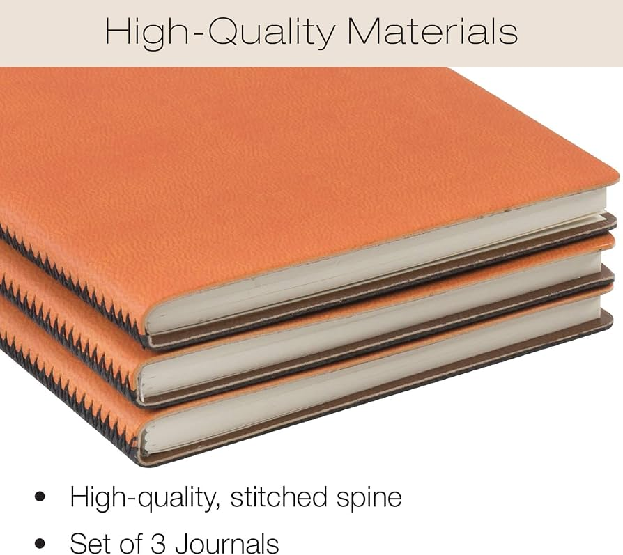
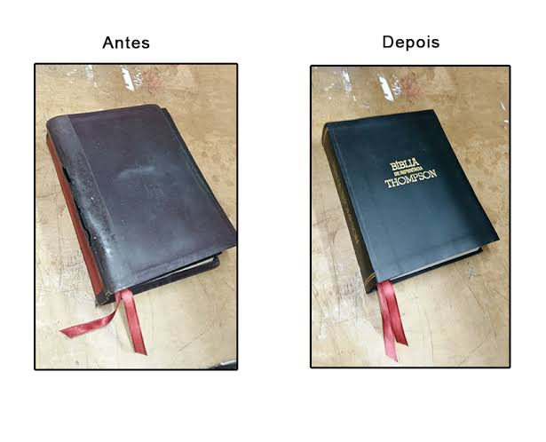
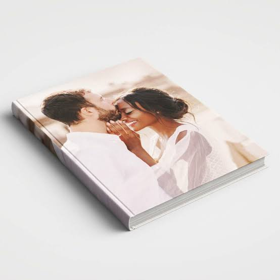
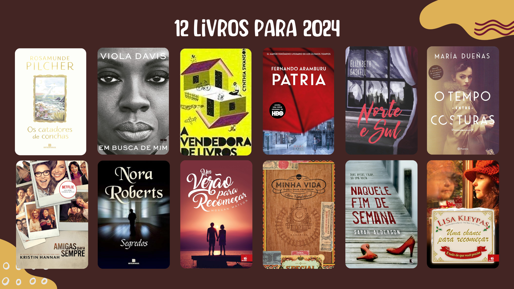

01
Dobra
As folhas são dobradas em cadernos e organizadas na ordem de leitura.
Costuramos, colamos e prensamos à mão — do caderno de uso diário à restauração de exemplares de família. Cada peça passa pelas mesmas quatro etapas que aprendemos há trinta anos.
Ver serviçosLinho belga, cor terracota
Capa dura, acabamento fosco
Percalux verde-musgo
Resistente à umidade
Papel de guarda marmorizado
Feito à mão, padrão único
Cada livro passa pela mesma sequência de trabalho, do primeiro caderno de páginas soltas até a prensa final.
01
As folhas são dobradas em cadernos e organizadas na ordem de leitura.
02
Os cadernos são costurados manualmente com fio encerado, ponto a ponto.
03
O lombo recebe cola natural, que dá firmeza sem enrijecer o papel.
04
O volume descansa na prensa por 24 horas para fixar a forma definitiva.

Caderno de campo

Restauro 1948

Álbum de casamento

Edição limitada, 12 exemplares
“Levei o diário do meu avô, que estava se desfazendo, e voltou como se tivesse sido feito ontem — mas ainda com a capa original.”